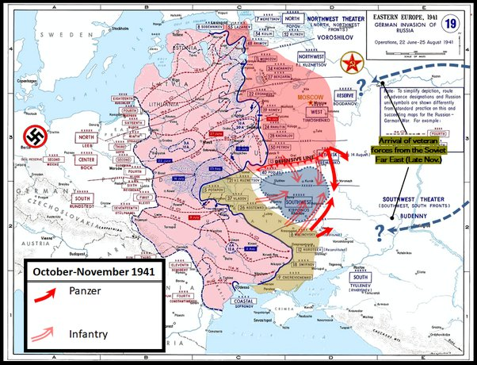
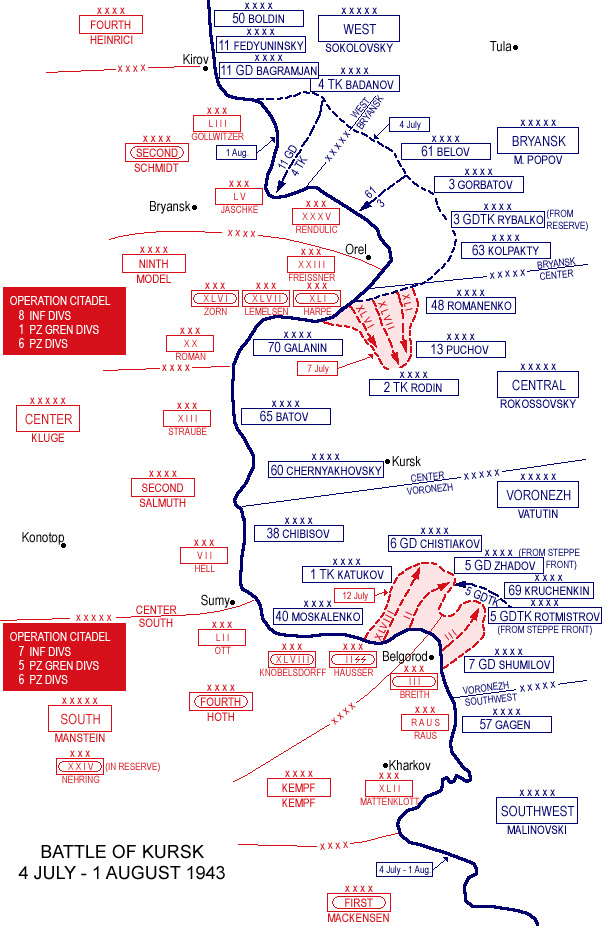
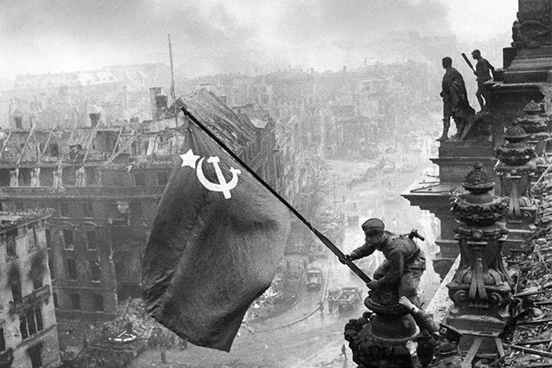

.jpeg)
Georgy Zhukov
The hero of the Soviet union and the Supreme Commander of the Red army. Zhukov was one of the best commander of The Soviet Union from 1941-1945,Zhukov first victory was at The battle of Khalkin gol against the Japanese in a undeclared war. Zhukov use the old pincer movement of a front assault by infantry and a flanking attack by tanks. The plan was a great success and destroyed an entire Japanese Army. This encirclement tatic would serve Zhukov well in future operations.
.jpeg)
Zhukov greatest defeat was during operation babarossa at the battle of Kiev. Zhukov ordered the battered Soviet army inside of Kiev to reatreat to avoid encirclement. However,the Wehrmacht was advancing faster than they could reatreat and encircled the Red army anyways leading to the losses of 500,000 soviet troops and 4 Soviet armies.
Zhukov was removed from command during September but was back 2 monhs later at the battle of Moscow and created a defensive line were the Germans would exhaust themselves attacking it and wait until winter with reinforcements from Siberia for a counter-attack. The Wehrmacht was forced to retreat but while Zhukov sucessfully saved Moscow, he had falied to encircle them.

During the Battle of Stallingrad,The German 6th army had taken the center of the city and only a few pockets of resistance remained. Zhukov relized the German flanks were severly weakened and created and oppotunity for encirclement. The Red army easily Breakthrough the Romanian,Hungarian,and Italian lines and encircled the 6th army inside Stallingrad. Zhukov also adanced on Rostov,threatening to encircle 30 divisons in the Caucasus region,forcing them to retreat and pushing out of the region.

During 1943,The Germans planned to encircling the Red army at Kursk. Stallin wanted an all out counter-attack,Zhukov convined him that they should fortify the salient and let the Germans exhaust themselves attacking Kursk before the launch their counter-offensive. When Operation citadel commenced,The Soviets inflicted 54,000 casualties that they could not afford and forced to retreat.This would be the last German attack against the Soviets,they would never gained ground on the eastern front and will keep falling back for the next 2 years
by March 1945 Zhukov was just 40 miles from Berlin,However,he decided that he would wait until Aprill to attack so he could straighten the line,by Aprill,The Soviets easily overrun the city and raised the Soviet flag over the Reichsatg on the 6th of May. Zhukov would be the first Soviet marshals to enter Moscow a few days later and oversaw the German surrender on the 8th of May
Zhukov died on 1974 but he would be known as the hero of the Soviet union and one of the best generals in history